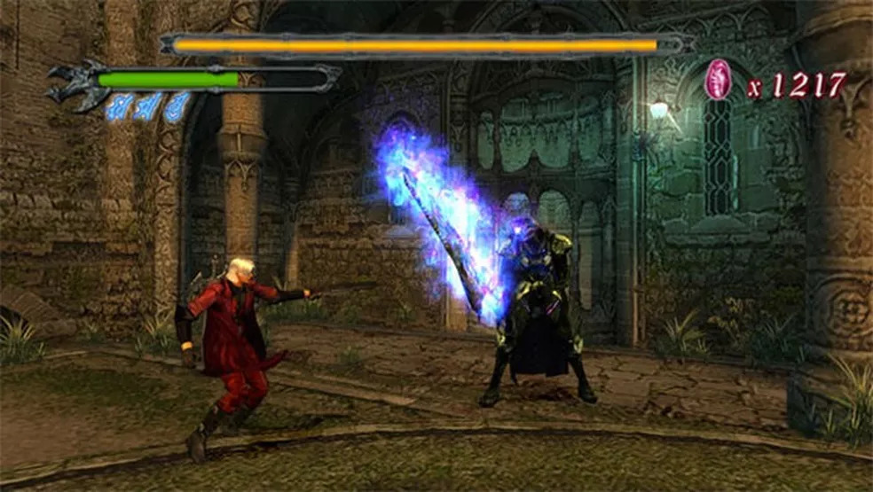
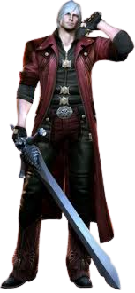

Devil May Cry é um jogo de ação-aventura que conta a história de Dante, um caçador de demônios que busca vingança contra o responsável pela morte de sua mãe e pelo aprisionamento de seu pai. Durante sua jornada, Dante encontra a misteriosa Trish e descobre que seu irmão gêmeo, Vergil, está vivo e também busca vingança contra o mesmo demônio que Dante procura. Juntos, eles lutam para derrotar o vilão Mundus e restaurar a paz no mundo.
Dante: O protagonista da série, um caçador de demônios.
Vergil: O irmão gêmeo de Dante, também um caçador de demônios.
Trish: Uma misteriosa mulher que ajuda Dante em sua jornada.